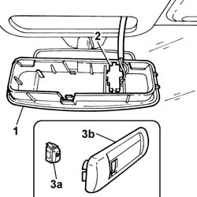

7030B64 sun-roof control switch - r+r
- Path
- Procedures > 70 FITTINGS > 7030 SUN ROOF AND HOOD > 7030B sliding roof > 7030B64 sun-roof control switch - r+r
- Kind
- repair procedure (removal / refitting; the operation number is the code)
- Applies to
- all engines; all production periods
- Interactive page
- https://sloeber94.github.io/elrnDB-fPnd/en/#/2753161
Applies to: all engines; all production periods
 Removing
Removing
 Refitting
RefittingDisconnect the battery negative terminal.
1. Release the switch holder trim from the housing in the roof lining.
2. Disconnect the sun roof control switch electrical connection.
3. Remove the switch (3a) from the trim (3b).

Applies to: all engines; all production periods
Refitting
RemovingFit the sun roof control switch in the trim.
Place the switch holder trim in position.
Connect the sun roof control switch electrical connection.
Place the switch holder trim in position.
Connect the battery negative terminal.
After the battery has been disconnected or a fuse has blown, the system must be initialized again, proceeding as follows:
- press the switch in the 'roof closed' position;
- keep the switch pressed: the roof will close in stages;
- keeping the switch pressed, wait for the roof to close fully until the motor is stopped;
- release the switch.